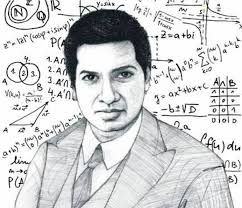

Who was Srinivasa Ramanujan?

Add your Ramanujan image as assets/ramanujan.jpg. This card gives the page a more professional historical presentation.
Srinivasa Ramanujan was one of the most extraordinary mathematical minds in history. He became famous for his remarkable intuition in number theory,
infinite series, continued fractions, and elegant numerical identities. Even with limited formal academic support, he produced deeply original results
that later influenced generations of mathematicians.
Ramanujan is remembered not just for solving difficult problems, but for seeing beauty and hidden structure in numbers. His mathematical thinking was
both imaginative and profound, which is why his name still symbolizes creativity in mathematics.
“Ramanujan’s legacy continues to inspire projects that connect mathematics, beauty, and imagination.”
Ramanujan’s success story
Early mathematical curiosity
From an early age, Ramanujan showed unusual fascination with numbers, patterns, and problem solving. His curiosity pushed him beyond ordinary classroom study.
Independent discovery
Much of his learning and exploration happened independently. He filled notebooks with original mathematical observations, formulas, and numerical relationships.
Recognition and legacy
His work attracted attention because it contained astonishing depth and originality. Over time, Ramanujan became one of the most respected and inspirational names in mathematics.
Lasting inspiration
Today, Ramanujan inspires students, developers, teachers, and mathematics lovers across the world. His name is associated with genius, elegance, and the hidden beauty of numbers.
What is this project?
The Ramanujan Magic Square Generator is a modern web project inspired by the famous birthday-related magic square idea associated with Ramanujan.
It transforms that inspiration into an interactive tool where users can generate a personalized magic-square-style experience from their own birth date.
What the project does
Users can generate a 4×4 birthday magic square, reverse-search dates from a magic sum and year, download the result as a PNG image,
and copy a shareable link. The project combines mathematics, frontend design, and practical user interaction into one smooth experience.
Why the developer created this project
This project was created to make a mathematical concept feel personal, visual, and enjoyable. Instead of keeping the idea as a static example,
the developer turned it into a polished web experience where users can interact with number patterns through their own birthday.
Developer vision
The goal was to build something that feels educational, creative, and portfolio-ready at the same time. It demonstrates how mathematics
can be translated into a usable and shareable product with strong frontend presentation.
Developer criteria and benefits
This project helps showcase practical skill in HTML, CSS, JavaScript, responsive design, UI thinking, shareable UX, SEO basics,
and product-style presentation. It also gives visitors a fun way to explore mathematics in a modern and memorable format.